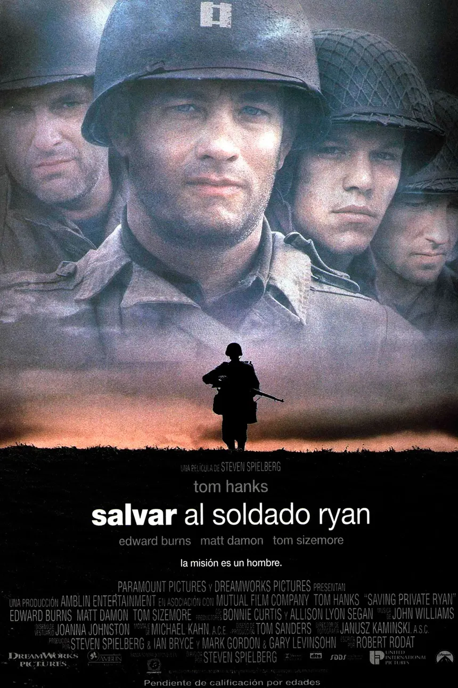
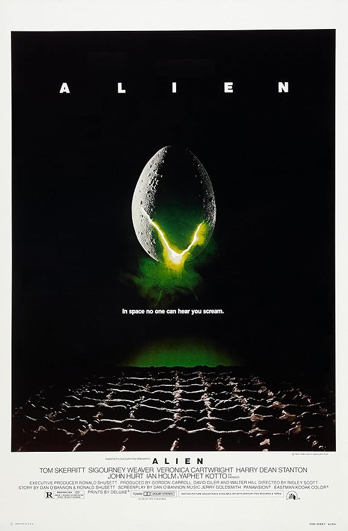
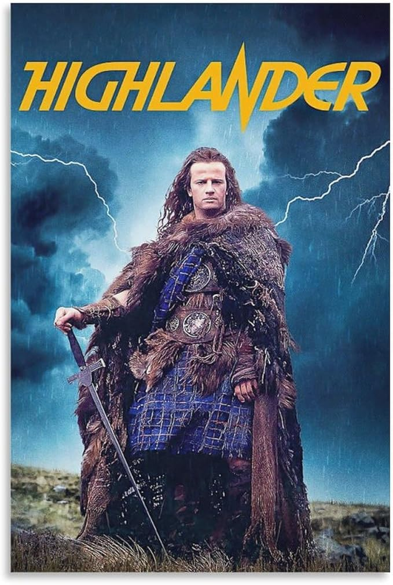

Bienvenido a nuestra página dedicada a la fusión entre el cine y los videojuegos clásicos. Aquí, exploramos cómo las películas han inspirado y dado vida a algunos de los videojuegos más emblemáticos de la historia. Te invitamos a descubrir las conexiones entre estos dos universos artísticos. Desde aventuras épicas hasta relatos nostálgicos.¡Acompáñanos en este viaje a través del tiempo y la creatividad!...


